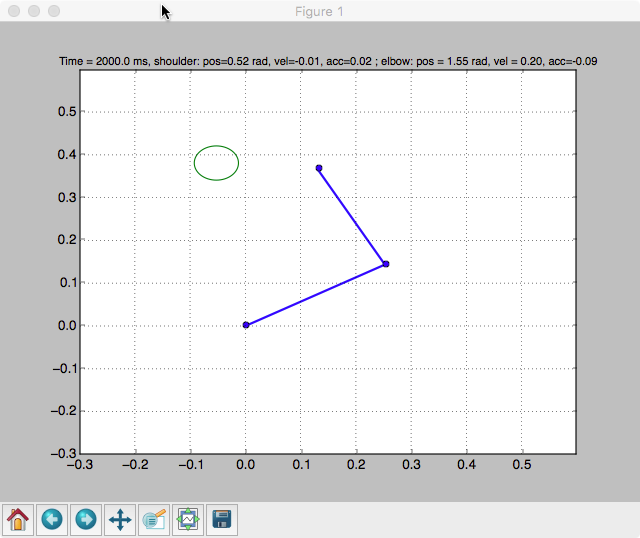
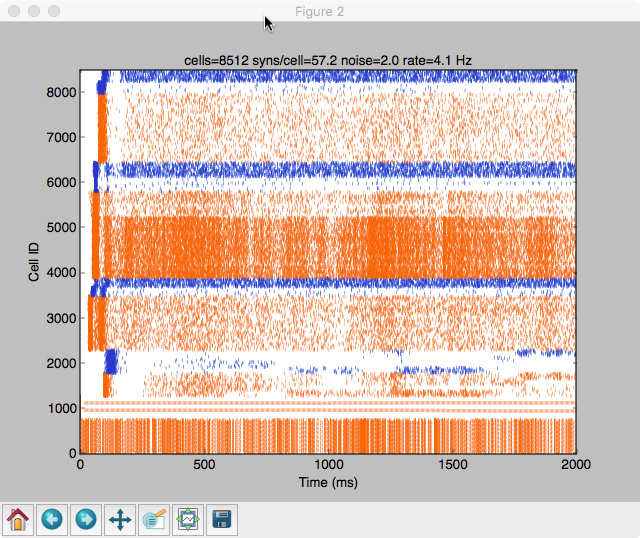

This code was used to run the simulations for the following publication: Dura-Bernal S, Neymotin SA, Kerr CC, Sivagnanam S, Majumdar A, Francis JT, Lytton WW. Evolutionary algorithm optimization of biological learning parameters in a biomimetic neuroprosthesis. IBM Journal of Research and Development (Special issue on Computational Neuroscience) 2017 61 (2/3) --------------------------------------------------------------------------------------------- Description ---------------------------------------------------------------------------------------------- Izhikevich cell-based model of primary motor cortex (M1) which can: 1) be interfaced with a virtual arm and use reinforcement learning to learn to reach two targets, 2) receive inputs from dorsal premotor cortex (PMd) cells (from file or in real time via Plexon) to modulate direction, 3) simulate different types of external stimulation (eg. electrical or optogenetic). --------------------------------------------------------------------------------------------- Instructions to run simple demo ---------------------------------------------------------------------------------------------- The code requires NEURON and Python and has been tested on Linux machines (Red Hat and Ubuntu). The steps below show how to run a simple demo where the system is trained and tested to reach two targets selected via different PMd inputs. The raster plot of each simulation will be shown, as well as the arm movement in real time, and a graph with the final arm trajectory. Although the optimized system parameters are used, for the demo purposes training duration is limited to 2 secs (instead of 85 secs), and the simple 2-stick dummy is used (instead of the full musculoskeletal arm). Therefore the output is just meant to illustrate how the model works, but does not correspond to the optimized performance of the system. To use the full musculoskeletal arm model see instructions at the end. 1. Unzip all files. 2. Type "nrnivmodl" in the root directory. This should create a directory called either i686 or x86_64, depending on your computer's architecture. 3a. To run model in single core type "nrniv -python main.py" or "python -i main.py" b. To run model in multiple cores type "mpiexec -np [num_cores] nrniv -mpi -python main.py" or "./runsim [num_cores]" While the model runs it, after a minute or so it produces figures like:   To use the musculoskeletal arm: 1. set "s.useArm = 'musculoskeletal'" in network.py (line 60). 2. Download the compiled C code for the musculoskeletal arm included in the following link (the zip file is 80 MB and after unzipping 265 MB): http://senselab.med.yale.edu/modeldb/data/183014/arm2dms_modeldb.zip Note the musculoskeletal arm model is provided as a C++ executable tested under RedHat. For other options please contact the author. Further information about the musculoskeletal arm can be found in the following publication: Dura-Bernal S, Zhou X, Neymotin SA, Przekwas A, Francis JT and Lytton WW (2015) Cortical Spiking Network Interfaced with Virtual Musculoskeletal Arm and Robotic Arm. Front. Neurorobot. 9:13. doi: 10.3389/fnbot.2015.00013 Available online at: http://journal.frontiersin.org/article/10.3389/fnbot.2015.00013/full --------------------------------------------------------------------------------------------- List of main files ---------------------------------------------------------------------------------------------- - main.py: Runs the model and reads parameters from command line. After setting the command line input parameters, it calls one of the functions in network.py (eg. runTrainTest2targets()) which runs the full sequence of functions to execute the model. - network.py: Contains all the functions that run the network model, including createNetwork(), addStimulation(), addBackground(), setupSim(), runSim(), finalizeSim(), saveData(), plotData(). It also includes functions that call all these functions in sequence (eg. runTrainTest2targets()). - shared.py: Contains all the model shared parameters and variables, including layer definitions and connectivity. It is imported as "s" from all other files, so that any parameter can be referenced from any file using s.paramName - analysis.py: functions to plot and analyse data - arm.py: Class containing all the virtual arm, target and RL critic apparatus. - armGraphs: Supporting functions for the virtual musculoskeletal arm - arminterface.py: Pipes interface with the virtual musculoskeletal arm - comet_batch.run: Example script to run batch simulation in HPC - dummyArm.py: simple virtual arm that can run independently and communicate via UDP - error.py: Auxiliary functions to calculate error measurements during batch optimization - evol_islands.py: Functions to run island-based evolutionary algorithms (using inspyred) to optimize model parameters - izhi2007.mod: NMODL definition of Izhikevich 2007 neuron model - izhi.py: Python wrapper for the different Izhikevich cell types - nsloc.mod: NMODL for Netstim with location and adapted so interval can be modified during execution (used for proprioceptive and PMd inputs) - nsloc.py: Python wrapper for NSLOC units - pmdData.mat: dorsal premotor cortex (PMd) data used as input to model - server.py: Functions to interface the model with Plexon recording system in real time - stdp.mod: NMODL for STDP implementation - stimuli.py: functions and parameters for differnt types of neural stimulation - vecevent.mod: NMODL for VecStim mechanism that allows spiking input at predefined times For any questions or further assistance please contact: salvadordura at gmail.com